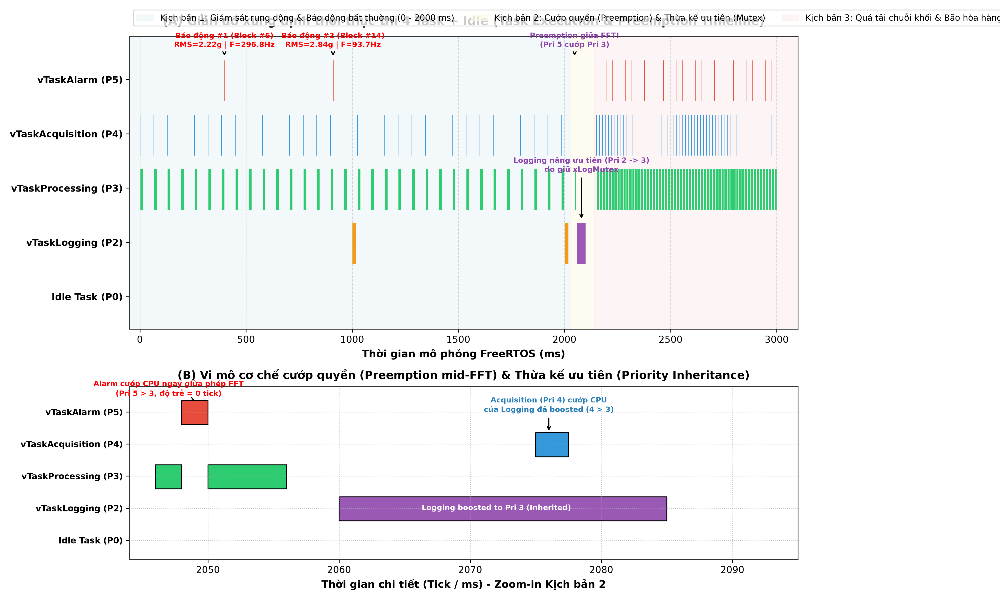
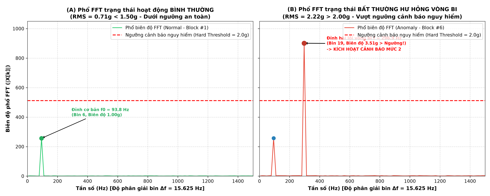
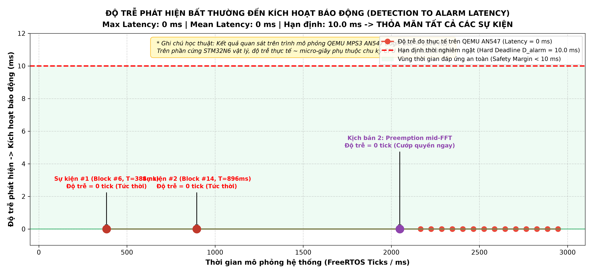
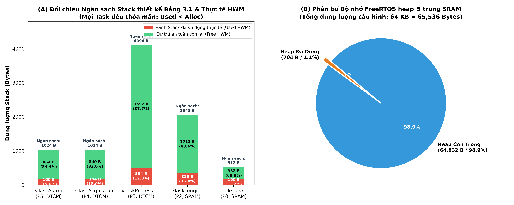
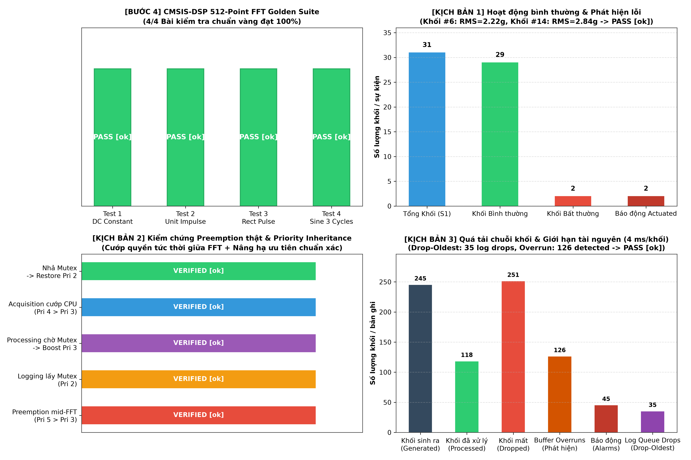

Kiến trúc: ARM Cortex-M55 (ARMv8.1-M Mainline + Helium MVE + FPU Hard-Float) | FreeRTOS Kernel 11.1.0 Non-TrustZone trên QEMU MPS3 AN547
| Tên Task | Ưu tiên | Chu kỳ (T) | Thời gian tính (C) | Vùng nhớ | Ngân sách Stack | Đỉnh thực tế (Used HWM) | Dự trữ an toàn (Free HWM) | Trạng thái |
|---|---|---|---|---|---|---|---|---|
| vTaskAlarm | Pri 5 | Phi chu kỳ (D=10 ms) | 1.0 ms | DTCM | 1,024 B (256w) | 160 Bytes (15.6%) | 864 Bytes | AN TOÀN |
| vTaskAcquisition | Pri 4 | 64 ms | 2.0 ms | DTCM | 1,024 B (256w) | 184 Bytes (18.0%) | 840 Bytes | AN TOÀN |
| vTaskProcessing | Pri 3 | 64 ms | 12.0 ms | DTCM | 4,096 B (1024w) | 504 Bytes (12.3%) | 3,592 Bytes | AN TOÀN |
| vTaskLogging | Pri 2 | 1,000 ms | 20.0 ms | SRAM | 2,048 B (512w) | 336 Bytes (16.4%) | 1,712 Bytes | AN TOÀN |
| Idle Task | Pri 0 | Khi rảnh rỗi | - | SRAM | 512 B (128w) | 160 Bytes (31.2%) | 352 Bytes | AN TOÀN |




